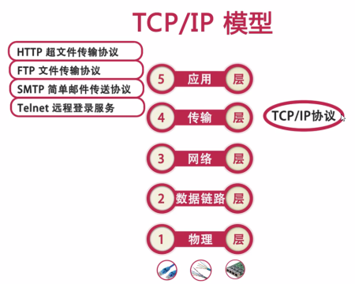
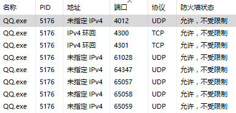

计算机网络的基本知识
两台计算机设备通过网络进行通信需要满足一些必然的条件: 1. IP地址 2. 协议 3. 端口号
TCP/IP模型是目前应用最为广泛的网络模型.

TCP/IP协议是传输层协议
常见的应用层协议有:
- DNS 域名系统(Domain Name System，DNS)：用于实现网络设备名字到IP地址映射的网络服务。
- HTTP 超文本传输协议 用于实现WWW服务
- FTP 文件传输协议
- TELNET 远程登录协议
- SMTP 简单邮件传输协议
- 简单网络管理协议(simple Network Management Protocol，SNMP)：用于管理与监视网络设备。
端口
- 用来区分不同的应用程序
- 端口号的范围为0~65535,其中0~1023是系统保留端口
一个应用可以绑定多个端口:

- IP地址和端口号组成了所谓的Socket, Socket是网络上运行的程序之间双向通信链路的终结点,是TCP和UDP的基础
- 常用的端口号有: http 80 ftp 21 telnet 23
Java对网路通信的支持
- InetAddress 用于标示网络上的硬件资源,也就是IP地址
- URL 统一资源定位符 通过URL可以直接读取或写入网络上的数据
- Socket 使用TCP协议实现网络通信的Socket相关的类
- Datagram 使用UDP协议,将数据保存在数据报中,通过网络进行通信.
InetAddress
// 获取本机的InetAddress实例
InetAddress address = InetAddress.getLocalHost();
System.out.println("计算名：" + address.getHostName());
System.out.println("IP地址：" + address.getHostAddress());
byte[] bytes = address.getAddress();// 获取字节数组形式的IP地址
System.out.println("字节数组形式的IP：" + Arrays.toString(bytes));
System.out.println(address);// 直接输出InetAddress对象
// 根据机器名获取InetAddress实例
// InetAddress address2=InetAddress.getByName("laurenyang");
InetAddress address2 = InetAddress.getByName("1.1.1.10");
System.out.println("计算名：" + address2.getHostName());
System.out.println("IP地址：" + address2.getHostAddress());
Socket通信与Socket类
TCP协议是面向连接 可靠的 有序的, 以字节流的方式发送数据
基于TCP协议实现网络通信的类
- 客户端的Socket类
- 服务端的ServerSocket类
Client.java
try {
//1.创建客户端Socket，指定服务器地址和端口
Socket socket=new Socket("localhost", 8888);
//2.获取输出流，向服务器端发送信息
OutputStream os=socket.getOutputStream();//字节输出流
PrintWriter pw=new PrintWriter(os);//将输出流包装为打印流
pw.write("用户名：alice;密码：789");
pw.flush();
socket.shutdownOutput();//关闭输出流
//3.获取输入流，并读取服务器端的响应信息
InputStream is=socket.getInputStream();
BufferedReader br=new BufferedReader(new InputStreamReader(is));
String info=null;
while((info=br.readLine())!=null){
System.out.println("我是客户端，服务器说："+info);
}
//4.关闭资源
br.close();
is.close();
pw.close();
os.close();
socket.close();
} catch (UnknownHostException e) {
e.printStackTrace();
} catch (IOException e) {
e.printStackTrace();
}
Server.java
/*
* 基于TCP协议的Socket通信，实现用户登陆
* 服务器端
*/
try {
//1.创建一个服务器端Socket，即ServerSocket，指定绑定的端口，并监听此端口
ServerSocket serverSocket=new ServerSocket(8888);
Socket socket=null;
//记录客户端的数量
int count=0;
System.out.println("***服务器即将启动，等待客户端的连接***");
//循环监听等待客户端的连接
while(true){
//调用accept()方法开始监听，等待客户端的连接
socket=serverSocket.accept();
//创建一个新的线程
ServerThread serverThread=new ServerThread(socket);
//启动线程
serverThread.start();
count++;//统计客户端的数量
System.out.println("客户端的数量："+count);
InetAddress address=socket.getInetAddress();
System.out.println("当前客户端的IP："+address.getHostAddress());
}
} catch (IOException e) {
e.printStackTrace();
}
ServerThread.java
/*
* 服务器线程处理类
*/
public class ServerThread extends Thread {
// 和本线程相关的Socket
Socket socket = null;
public ServerThread(Socket socket) {
this.socket = socket;
}
//线程执行的操作，响应客户端的请求
public void run(){
InputStream is=null;
InputStreamReader isr=null;
BufferedReader br=null;
OutputStream os=null;
PrintWriter pw=null;
try {
//获取输入流，并读取客户端信息
is = socket.getInputStream();
isr = new InputStreamReader(is);
br = new BufferedReader(isr);
String info=null;
while((info=br.readLine())!=null){//循环读取客户端的信息
System.out.println("我是服务器，客户端说："+info);
}
socket.shutdownInput();//关闭输入流
//获取输出流，响应客户端的请求
os = socket.getOutputStream();
pw = new PrintWriter(os);
pw.write("欢迎您！");
pw.flush();//调用flush()方法将缓冲输出
} catch (IOException e) {
// TODO Auto-generated catch block
e.printStackTrace();
}finally{
//关闭资源
try {
if(pw!=null)
pw.close();
if(os!=null)
os.close();
if(br!=null)
br.close();
if(isr!=null)
isr.close();
if(is!=null)
is.close();
if(socket!=null)
socket.close();
} catch (IOException e) {
e.printStackTrace();
}
}
}
}
多线程Socket通信优化
- 完成新客户端的绑定,启动多线程时, 设置优先级, 为设置优先级可能会导致运行时速度非常慢, 可降低优先级
- 对于同一个Socket, 如果关闭了输出流,则与该输出流关联的Socket也会被关闭,所以一般不用关闭流, 直接关闭socket即可.
使用TCP通信传输对象
//使用ObjectOutputStream 对象序列化流,传递对象 OutputStream os=socket.getOutputStream(); ObjectOutputStream oos=new ObjectOutputStream(os); User user=new User(); oos.writeObject(user); socket.shutdownOutput(); ...使用TCP通信传输文件
BufferedOutputStream fos=new BufferedOutputStream(new FileOutputStream(file)); byte[] buf =new byte[1024]; int len; while((len=clientInputStream.read(buf))!=-1){ fos.write(buf,0,len); fos.flush(); }
UDP协议与Datagram
UDP协议(用户数据报协议)是无连接 不可靠 无序的. UDP协议以数据报作为数据传输的载体. 进行数据传输时,首先要将传输的数据定义成数据报(Datagram),在数据报中指明数据所要达到的Socket(主机地址和端口号),然后再讲数据报发送出去.
- DatagramPacket: 表示数据报包
- DatagramSocket: 进行端对端通信的类
UDPClient.java
/*
* 向服务器端发送数据
*/
//1.定义服务器的地址、端口号、数据
InetAddress address=InetAddress.getByName("localhost");
int port=8800;
byte[] data="用户名：admin;密码：123".getBytes();
//2.创建数据报，包含发送的数据信息
DatagramPacket packet=new DatagramPacket(data, data.length, address, port);
//3.创建DatagramSocket对象
DatagramSocket socket=new DatagramSocket();
//4.向服务器端发送数据报
socket.send(packet);
/*
* 接收服务器端响应的数据
*/
//1.创建数据报，用于接收服务器端响应的数据
byte[] data2=new byte[1024];
DatagramPacket packet2=new DatagramPacket(data2, data2.length);
//2.接收服务器响应的数据
socket.receive(packet2);
//3.读取数据
String reply=new String(data2, 0, packet2.getLength());
System.out.println("我是客户端，服务器说："+reply);
//4.关闭资源
socket.close();
UDPServer.java
/*
* 接收客户端发送的数据
*/
//1.创建服务器端DatagramSocket，指定端口
DatagramSocket socket=new DatagramSocket(8800);
//2.创建数据报，用于接收客户端发送的数据
byte[] data =new byte[1024];//创建字节数组，指定接收的数据包的大小
DatagramPacket packet=new DatagramPacket(data, data.length);
//3.接收客户端发送的数据
System.out.println("****服务器端已经启动，等待客户端发送数据");
socket.receive(packet);//此方法在接收到数据报之前会一直阻塞
//4.读取数据
String info=new String(data, 0, packet.getLength());
System.out.println("我是服务器，客户端说："+info);
/*
* 向客户端响应数据
*/
//1.定义客户端的地址、端口号、数据
InetAddress address=packet.getAddress();
int port=packet.getPort();
byte[] data2="欢迎您!".getBytes();
//2.创建数据报，包含响应的数据信息
DatagramPacket packet2=new DatagramPacket(data2, data2.length, address, port);
//3.响应客户端
socket.send(packet2);
//4.关闭资源
socket.close();
URL
/*
* URL常用方法
*/
try {
//创建一个URL实例
URL imooc=new URL("http://www.imooc.com");
//?后面表示参数，#后面表示锚点
URL url=new URL(imooc, "/index.html?username=tom#test");
System.out.println("协议："+url.getProtocol());
System.out.println("主机："+url.getHost());
//如果未指定端口号，则使用默认的端口号，此时getPort()方法返回值为-1
System.out.println("端口："+url.getPort());
System.out.println("文件路径："+url.getPath());
System.out.println("文件名："+url.getFile());
System.out.println("相对路径："+url.getRef());
System.out.println("查询字符串："+url.getQuery());
} catch (MalformedURLException e) {
e.printStackTrace();
}
/*
* 使用URL读取网页内容
*/
try {
//创建一个URL实例
URL url = new URL("http://www.baidu.com");
//通过URL的openStream方法获取URL对象所表示的资源的字节输入流
InputStream is = url.openStream();
//将字节输入流转换为字符输入流
InputStreamReader isr = new InputStreamReader(is, "utf-8");
//为字符输入流添加缓冲
BufferedReader br = new BufferedReader(isr);
String data = br.readLine();//读取数据
while (data != null) {//循环读取数据
System.out.println(data);//输出数据
data = br.readLine();
}
br.close();
isr.close();
is.close();
} catch (MalformedURLException e) {
e.printStackTrace();
} catch (IOException e) {
e.printStackTrace();
}